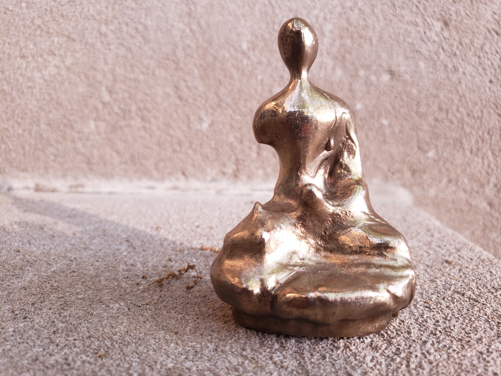
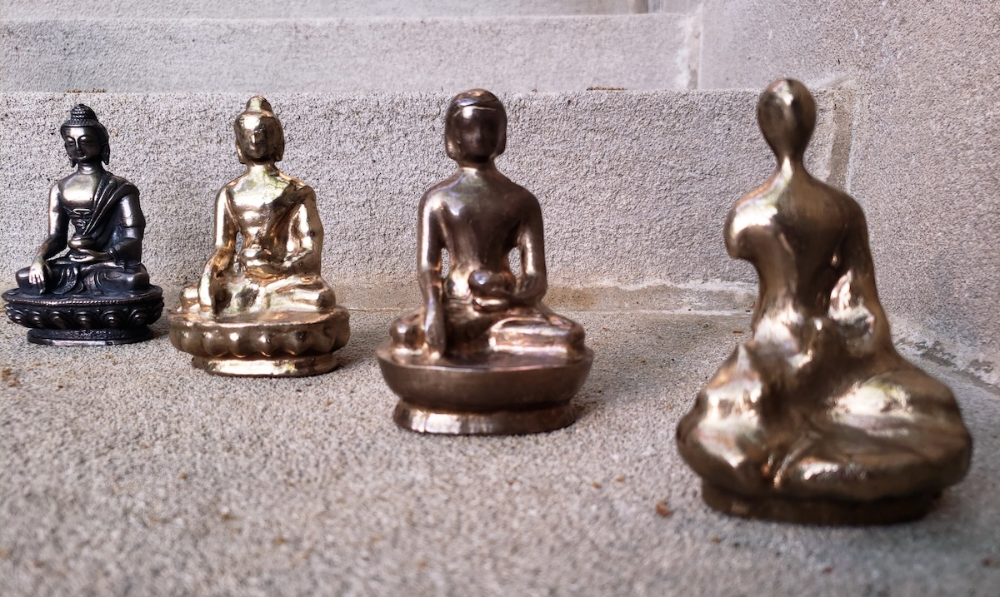
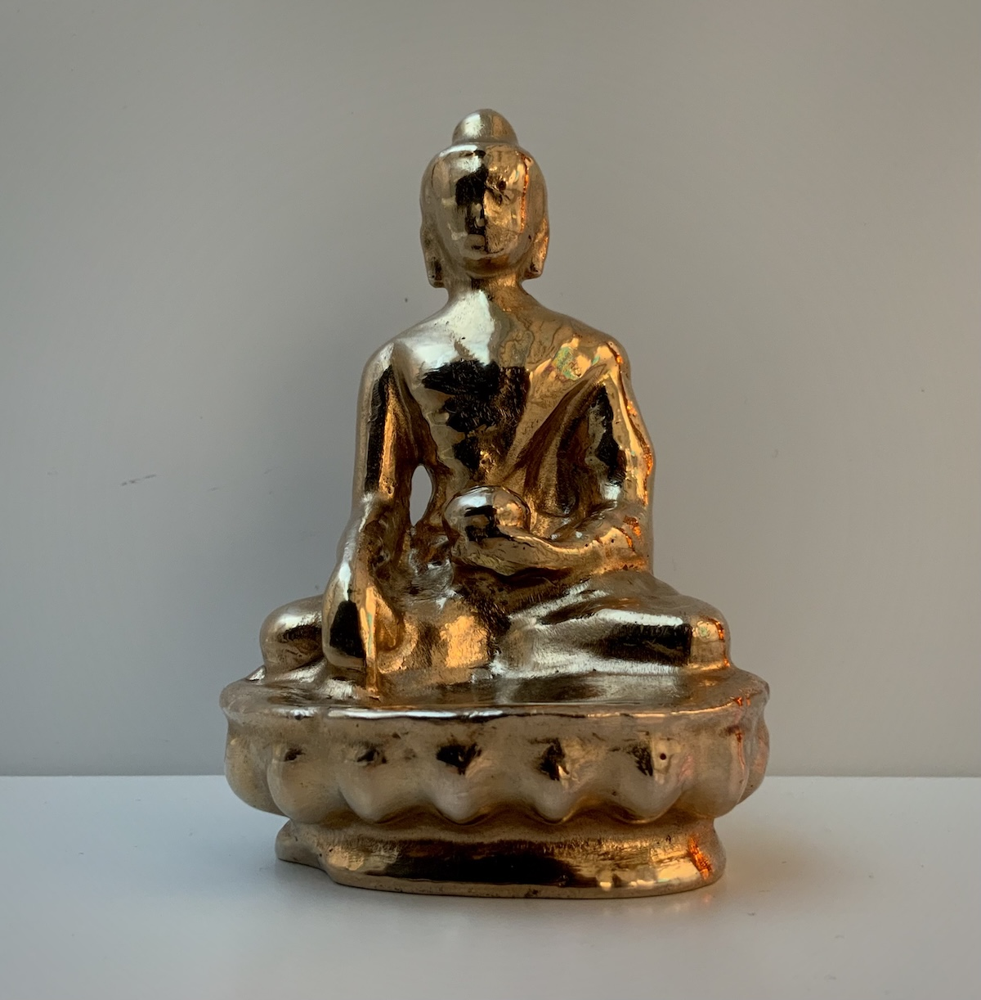

बुद्ध
This project consists of eight silicon bronze sculptures of Buddha. The meditating form of the sculptures is inspired by the ones I have seen in handicraft stores on the streets of Kathmandu and gumbas in the Himalayas. However, most of the sculptures I have seen depict Buddha after enlightenment. Here, I have experimented through different styles (abstract and representational) with the phase transitions of Buddha. पीडा (agony) symbolizes the fact that Buddha started his journey after realizing that life is full of suffering. मनु (manu) is a miniature human. राग (rage) is an intermediate phase where Buddha has achieved Buddhattwa but not completely as there is a remnant of violence. बोधी (Bodhi) portrays Buddha after enlightenment.
Wait as I experiment on the journey of Siddhartha Gautam achieving the status of Buddha!!!


